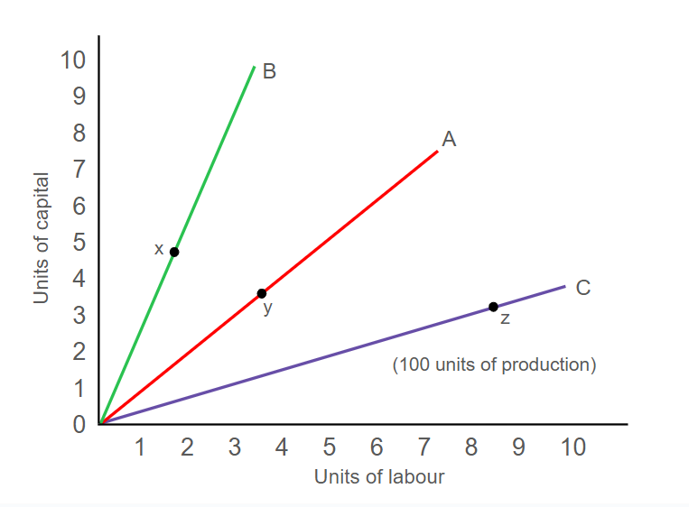
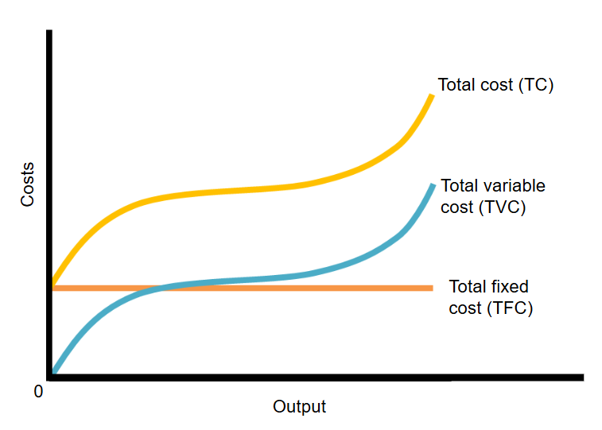
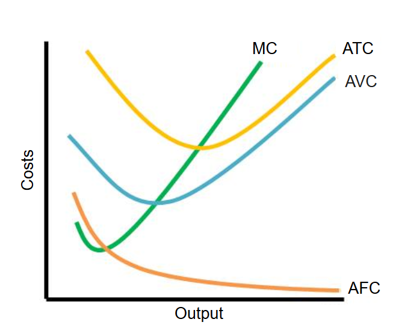
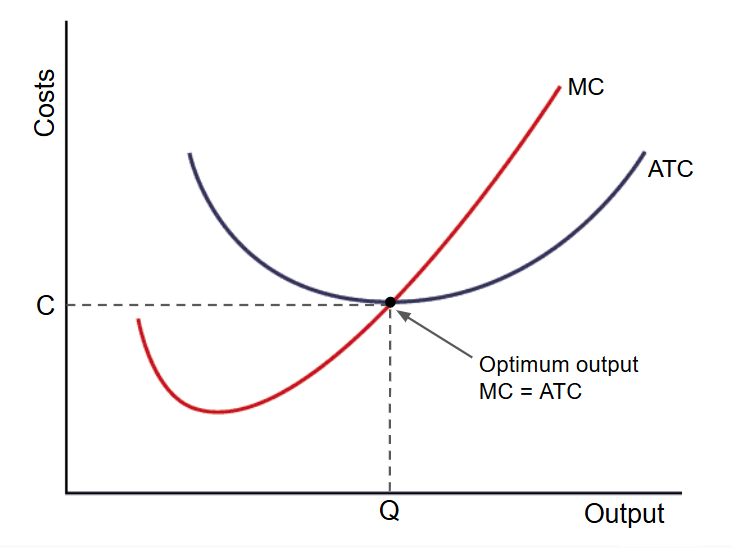
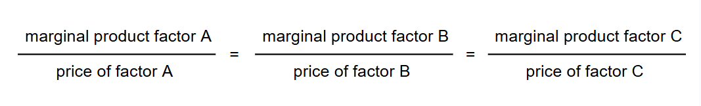
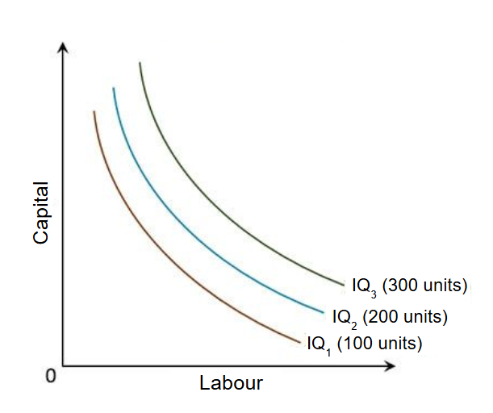
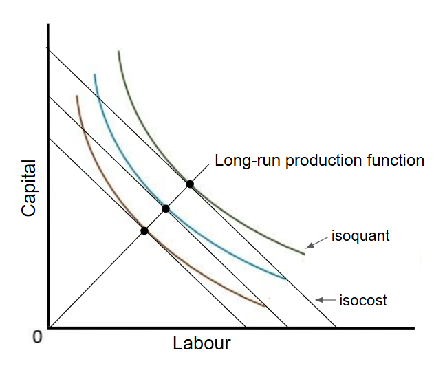
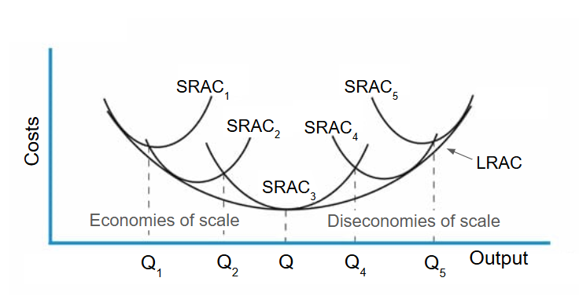
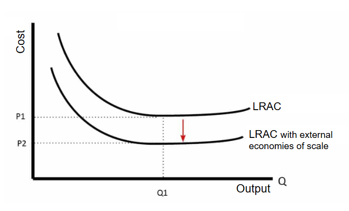

The four factors of productions are land, labour, capital and enterprise. The demand for these factors come from producers who wish
to use them to make various goods. Firms have to find the least cost or most efficient combination of labour and capital for the
production of a given quantity of output. Clothing is a typical example of a business where labour and capital are in direct competition
with each other.

In the example of the clothing manufacturer, the graph shows three 3 methods of production, each combines different
levels of labour and capital to make clothing.
Line A shows a production method, using capital and labour in equal proportion.
Line B uses twice as much capital as labour.
Line C shows twice as much labour as capital.
On these lines, points x, y and z shows the respective amount of labour and capital needed to produce 100 units of clothing.
Joining these points gives us an isoquant.
The isoquant can be extended for other combinations of labour and capital not shown on the graph.
Short-run Production Function
The short run is a period of time in economics when at least one of the factors of production is fixed.
Labour is the usual variable factor of production in the short run; all other factors are fixed.
The following graph is called the production function, which shows the relationship between the quantity of factor inputs (labour)
and the total product (output of clothing).
Marginal product is the increase in total product that occurs from an additional input (labour in this case).
Average product = Total product / Number of workers. It can be a simple measure of labour productivity.
As the number of workers increases, the marginal product declines. This is known as the
law of diminishing returns.
Increasing labour is a short-term way to increase output, but theres a point where marginal product falls and may become negative.
Short-run Cost Function
A firm is simply the economic organisation that transforms factor inputs to produce goods/services for the market. Firms have particular
objectives such a profit maximisation, the avoidance of risk-taking and achieving long-term growth. In economic theory, all firms are headed
by an entrepreneur, who must consider all the costsof the factors of production involved in the final output.
There are two types of short-run costs: Fixed Costs (FC) and Variable Costs (VC).

Fixed Costs (FC): costs independent of output (e.g. paying for factory)
Variable Costs (VC): costs directly related to the level of output (e.g. labour costs)
Total Cost (TC) = total fixed costs (TFC) + total variable costs (TVC)

Average fixed cost (AFC) = TFC / output
Average variable cost (AVC) = TVC / output
Average total cost (ATC) = TC / output
Marginal cost (MC) = Change in TC / Change in output
The shape of the short-run ATC is the result of ATC = AFC + AVC
As the firm's output rises, the AFC will fall because the TFC is being spread over increased output. At the same time, AVC will
be rising because of diminishing returns to the variable factor. Eventually, this will outweigh the falling AFC, causing ATC to rise.
This result is the "U" shaped ATC curve because of the law of diminishing returns.

Marginal costs (MC) crosses average total cost (ATC) at its lowest point. This is where the most efficient output is for a firm
in the short run.
Left of ATC: Increasing returns as ATC decreases.
Right of ATC: Diminishing returns as ATC rises.
Because the short run marginal cost curve is sloped like this, mathematically the average cost curve will be U shaped.
Initially, average costs fall. But, when marginal cost is above the average cost, then average cost starts to rise.
Long-run Production Function
All factors of production are variable in the long run.
The best combination of factors can be arrived at as their price varies. Firms should aim to be in a position where:


An isoquant map that shows the different combinations of labour and capital that can be used to produce various levels
of output.
This isoquant map consists of a collection of isoquants for output levels of 100, 200, and 300 units of production.
Increasing returns to scale is a scenario where as production increases, relatively less capital and labour is required
per unit of output.
Decreasing returns to scale is a scenario where as production increases, increasing amounts of capital and labour is required
per unit of output.

This graph shows isoquants and isocosts.
An isocost shows all the combinations of labour and capital where the relative cost is constant. Each isocost shown has an identital slope.
The best combination of factors for firms to employ is where the isocost is tangential to an isoquant.
The long-run production function is the expansion path of the firm, which can be shown by connecting all of the tangential points.
It is useful for longer-term planning.
However it is important to recognise that in practive:
It is very difficult for firms to determine their isoquants.
It is assumed in the long run its possible to switch factors of production, which may not be as easy as theory sugguests.
Some employers may be reluctant to switch labour and capital - they may feel that they have a social obligation to their workforce.
Long-run Cost Function
In the very long run, technological change can alter the way the entire production process is organised, including the nature of the
products themselves.
In a society with rapid technological progress, the time period between short and long run will shrink. In turn, this will shift
the firm's product curve upwards and its cost curves downwards.

The long-run average cost (LRAC) curve shows the least cost combination of producing any given quantity of output.
The shape of the LRAC is derived from a series of short-run situations.
The LRAC curve is "U" shaped due to economies of scale and diseconomies of scale. If a firm has high fixed costs, increasing
output will lead to lower average costs. However, after a certain point, a firm may experience diseconomies scale, where increased
output leads to higher average costs.
The LRAC is flatter than the SRC as it is indicative of a firm experiencing falling long-run costs overtime.
Minimum efficient scale
The minimum efficiency scale is the lowest level of output where average costs are minimised. It is at Q in the previous graph.
In industries where the minimum efficient scale is low, there will be a large number of firms. Where the minimum efficient scale is
high, the competition is between a few large firms.
Internal and External Economies and Diseconomies of Scale
Economies of scale occur when average costs decrease as the firm increases its output by increasing its size or scale of operations.
There are two types of economies of scale: Internal and External.
Internal economies of scale
Internal economies of scale are the benefits gained by a firm as a result of its own decision to produce on a larger scale. It happens
when the firm's output is rising proportionally faster than the inputs.
Internal economies of scale occur in various ways:
Technical economies: the advantages gained directly in the production process through more efficient production
methods. Some production techniques only become viable beyond a certain level of output.
Purchasing economies: As firms increase in scale, they increasing purchasing power with suppliers. Through bulk buying,
they are able to purchase supplies more cheaply, which reduces average costs.
Marketing economies: Large-scale firms are able to promote their products and pay lower rates for advertising. This also includes
saving in logistics costs.
Managerial economies: This comes as a result of specialisation. Experts can be hired to manage operations, finance, human resources,
sales, IT systems, etc.
Financial economies: Large-scale firms usually have better and cheaper access to borrowed funds than smaller firms, because their
perceived risk is lower.
External economies of scale
External economies of scale are particular benefits received by all the firms in an industry as a direct consequence of the growth of
that industry.

Reasons why external economies of scale could occur:
Cluster effect - If firms locate in a similar area, then this makes it more efficient for suppliers to meet a larger
base of purchasers. For example, if you set up a chemical firm in the Ruhr Valley, Germany, there will be already suppliers
to deal with the related aspects of the industry.
Skilled labour - If similar firms locate in a particular region, it encourages skilled labour to seek work in
this area. For example, Silicon Valley has become a hotspot for IT industries, attracting skilled workers.
Firms spend less on recruiting skilled labour.
Transport links - If mining becomes concentrated in a certain area, then there will develop better transport links
for shipping the goods to the market. Therefore, as new firms enter or existing firms expand, they can take advantage of the
existing infrastructure to get lower average costs.
Supportive legislation - In the political sphere, if an industry grows and becomes important to a region, it
may gain greater political bargaining power and local politicians will seek to gain favourable terms for their industry
such as subsidies/tariffs.
Internal diseconomies of scale
A firm can expand the scale of output too much, resulting in the average cost to rise. This is indicative of diseconomies of scale.
Reasons why internal diseconomies of scale could occur:
Problems in management and co-ordination.
Poor communication.
Workers may feel a lack of motivation due to the repetitive nature of work.
when there is a large number of workers it is easier to escape with not working very hard because it is more difficult for
managers to notice shirking.
Firms may attempt to overcome diseconomies of scale by splitting up the firm into more manageable sections. For example, a large
multinational may be split up into local geographical areas, with local managers facing incentives to maximise efficiency.
External diseconomies of scale
External diseconomies of scale occur when an industry growing in size causes negative externalities and rising long-run average costs.
Reasons why external diseconomies of scale could occur:
Traffic congestion which increases distribution costs.
Land shortages and therefore rising fixed costs.
Shortages of skilled labour and therefore rising variable costs.
Total, Average, and Marginal Revenue
Total revenue (TR) represents the sales of a firm and is obtained by multiplying the price of a good (P) by the number of units sold (Q):
TR = P x Q
Average revenue (AR) is the revenue per unit of output sold:
AR = TR / Q
Marginal revenue (MR) is the additional revenue arising from the sale of an additional unit of output:
MR = Change in TR / Change in Q
When analysing a firm's revenue, it is important to know the type of market in which the firm is operating.
In a fully competitive market, the firm is a price taker, where they have no control over the price of its goods. The firms demand
curve will be horizontal, and its revenue will depend entirely on the amount of goods sold.
In any other type of market, the firm will face a downward sloping curve. The firm is a price maker, where if the firm chooses to increase
output, price will fall; if it decides to reduce output, price is expected to increase. As output changes so does price and revenue. The
extent of the change will depend on the price elasticity of demand. The firm's demand curve is its average revenue curve.
Normal, Subnormal, and Supernormal Profit
Profit is what is left over when total costs are deducted from total revenue.
Normal profit is the minimum return that a firm must receive to remain in business (this includes allowance for anything owned
by the entrepreneur). Normal profit is included in the total cost of a firm:
Profit = Total Revenue - Total Costs (including normal profit)
Any profit over normal profit is known as supernormal profit:
Supernormal Profit = Total Profit - Normal Profit
When supernormal profits are being earned signals more firms to enter the market.
Subnormal profits is when the profit that is earned by a firm is less than normal profit. If a firm is making subnormal profit,
it may decide to withdraw from a market in the long-run.
Key Terms
Economies of scale: the benefits gained from falling long-run average costs as the scale of output increases.
Isoquant: a curve showing combinations of labour and capital to produce a given level of output.
Total product: the same as total output.
Production function: the maximum possible output from a given set of factor inputs.
Marginal product: the change in output arising from the use of one more unit of factor of production.
Law of diminishing returns: where the output from an additional unit of input leads to a fall in the marginal product; also
known as the law of variable proportions.
Average product: total product divided by the number of workers employed; a simple measure of productivity.
Profit maximisation: the assumed objective of a firm; the difference between total revenue and total cost is at a maximum.
Fixed costs (FC): costs that are independent of output in the short run.
Variable costs (vc): costs that vary directly with output in the short run.
Increasing returns to scale: where output increases at a proportionally faster rate than the increase in factor inputs.
Decreasing returns to scale: where factor inputs increase at a proportionately faster rate than the increase in output.
Isocosts: lines of constant relative costs for factors of production.
Minimum efficient scale: lowest level of output at which costs are minimised.
Diseconomies of scale: where long-run average costs increase as the scale of output increases.
External economies of scale: cost savings accruing to all firms as the scale of the industry increases.
Total revenue (TR): a firm's total sales or earnings over a given period of time.
Average revenue (AR): revenue per unit of output.
Marginal revenue (MR): the additional or extra revenue gained from the sale of one more unit of output.
Price taker: a firm that is not able to influence market price.
Price maker: a firm that can choose what price to sell its goods in the market.
Profit: the difference between total revenue and total costs.
Normal profit: a cost of production that is just sufficient for a firm to keep operating in a particular industry.
Supernormal profit: that which is earned above normal profit.
Subnormal profit: that which is earned below normal profit.